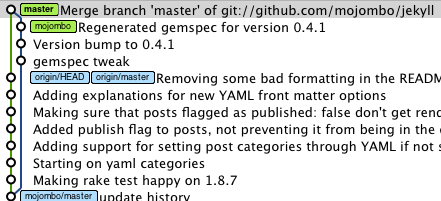

Build Automation
by Peter Ajtai
a Lead Dev at:
Fat fingers
Distracted minds
Mystery code with no history
Solution:
Build Automation
History
- Originally for compilers / linkers
- XML / Shell
- Now there are more options. Your imagination is the limit.
Advantages
- Defined build options producing defined outputs
- Don't have to remember to manually update variables / config files
- Don't have to remember to manually move files
- Don't have to remember to manually package, commit, etc.
- Reliability
- Reproducibility
- Clients sleep easier at night
Grunt
- Grunt is not only for Javascript
- We all know Javascript
- Grunt uses Node (server JS)
- Writing your own tasks is simple
- Kicking off other - non Grunt - tasks is simple
- Grunt has a vibrant community of plugin authors
- SOLID has some plugins
- This means they can be used in multiple projects, but updated centrally
- NPM means have access to old versions
Our build goals
- Builds to push to stage and production
- No CI (yet?)
Anatomy of a Grunt process
- config object - in grunt.js
- package.json - your dependencies
- task registrations and definitions
- let's look at an example...
Proof of concept that we can incorporate automated builds
- Minimum necessary tasks for a stage push
- If it works (and it does!), much more can be added
The Tasks
grunt.registerTask('shell:cleanStage cp:temp setPHPConstant:stage' +
'useref concat min cssmin shell:propelGen' +
'clean cp:stage shell:buildStageToGitlab');
// set things up
shell:cleanStage cp:temp
// PHP environment changes - leverages PHP
setPHPConstant:stage
// min, concat, cache bust (for twig templates too)
useref concat min cssmin
// propel
shell:propelGen
// cleanup
clean cp:stage
// git going - this task is more involved
shell:buildStageToGitlab
// set things up
shell:cleanStage cp:temp
- Tasks can use node directly, but often simpler to use a Grunt task
// PHP environment changes - leverages PHP
setPHPConstant:stage
setPHPConstant : {
stage : {
constant : 'ENV',
value : 'staging',
file : project.dirs.temp + project.files.constants
}
}
// Changes this
define('ENV', 'local');
// To this, and PHP does the rest...
define('ENV', 'staging');
- php-set-constant is a Grunt plugin on NPM
- Inter office collaboration. Thanks Eric!
- International collaboration. Thanks Róbert!
- Integrates with how you naturally do things in PHP to set environments
// min, concat, cache bust (for twig templates too)
useref concat min cssmin
- useref: also one of our Grunt plugins
- A more complex task; makes use of other tasks
- useref could call concat, min, and cssmin directly, but users need flexibility as to order of calls. Order is left up to user.
- What useref does
- Allows you to define what to minify and concatenate and how to cache bust all in one place
- All these things are defined in build blocks...
Build blocks
- Concept from H5BP
and Yeoman
- useref simplifies and customizes the concept to our needs (many pages with blocks, grunt templates, comments within blocks, options for cache bust, etc.)
- Works for both js and css
- As many blocks on a page as you want
- As many pages with blocks you want
- Don't have to manually update a list of minification or concatenations!
- Can easilly run project for debugging without min, concat, etc.
Build blocks
<!-- build:js /js/base.<%= grunt.template.today('yymmddhhMM') %>.min.js -->
<script type="text/javascript" src="/js/vendor/jquery.1.7.1.js"></script>
<script type="text/javascript" src="/js/vendor/bootstrap.2.2.2.js"></script>
<!-- Underscore drop-in -->
<script type="text/javascript" src="/js/vendor/lodash.0.8.0.js"></script>
<script type="text/javascript" src="/js/vendor/cryptojs-3-0-2/rollups/hmac-sha1.js"></script>
<script type="text/javascript" src="/js/vendor/cryptojs-3-0-2/components/enc-base64-min.js"></script>
<script type="text/javascript" src="/js/vendor/modernizr-2.5.3.js"></script>
<!-- endbuild -->
<!-- The above compacts to this -->
<script src="/js/base.1301170537.min.js"></script>
<!-- AND it creates the min concat file, and puts it in the appropriate spot -->
// propel
shell:propelGen
- Just another task that you would always have to remember
// cleanup
clean cp:stage
- More things you'd have to remember
- clean
- Removes things like schemas, config files, etc.
-
clean : {
buildProperties : project.dirs.temp + project.files.buildProperties,
runtimeConf : project.dirs.temp + project.files.runtimeConf,
schema : project.dirs.temp + project.files.schema
},
- If you refer to a multi task without a target, all targets are run.
- e.g "clean" vs "clean:schema"
- At this point everything is in targets/stage - this is .gitignored!
// git going - this task is more involved
shell:buildStageToGitlab
buildStageToGitlab: {
command: 'git stash save "Build script saving current branch state" ' +
'&& git checkout stage ' +
'&& git pull --rebase ' +
'&& ls | grep -v ^targets$ | grep -v ^node_modules$ | grep -v ^cache$ | grep -v ^logs$ | grep -v ^temp$ | xargs rm -r ' +
'&& cp -R targets/stage/ . ' +
'&& echo $(($(<.build) + 1))>.build ' +
'&& git add -A ' +
'&& git commit -am "Stage build: "$(<.build)' +
'&& git push origin stage ' +
'&& git checkout - ' +
'&& git stash pop',
stdout : true,
stderr : true
}
},
buildStageToGitlab
git stash save "Build script saving current branch state"
- Since this is for staging, you don't need everything committed
- Production would be different
- This needs to be cleaned up, since it shows error if everything IS commited (but works anyway)
buildStageToGitlab
git checkout stage
- We can switch branches
- Grunt is global
- Grunt config is already stored
- And node_modules is in .gitignore
- Untracked files are preserved on branch switches
- So what happens to targets/stage ?
buildStageToGitlab
git pull --rebase

- Make sure you have latest
- Make sure you rewind head, and apply your changes during the ff (no meaningless merges)
- --rebase should be in your ~/.gitconfig but we can't be sure
buildStageToGitlab
git pull --rebase
- Two people are at commit "Original"
- Person 1: Original - 1Change
- Person 2: Original - 2Change
- Person 1 pushes to remote
- At this point person 2 has diverged
- Solution rewind head to Original, add 1Change, now add 2Change and no need to merge
buildStageToGitlab
ls |
grep -v ^targets$ | grep -v ^node_modules$ | grep -v ^cache$ |
grep -v ^logs$ | grep -v ^temp$ |
xargs rm -r
- Grunts flexibility allows you to preserve the headaches of shell tasks... yay?
- We delete everything but certain chosen directories
- grep -v "inverts" your grep - everything but
- You can pipe arguments into xargs
- We get the args from a filtered "ls" command
- Basically delete the old stage build and start fresh
buildStageToGitlab
cp -R targets/stage/ .
- Copy new build to root of stage
buildStageToGitlab
echo $(($(<.build) + 1))>.build
- There is a file on stage that contains the build number
- This is public and useful for bug reports / etc.
- It is also a simple sanity check
- If we know a version worked, can revert to it with git
- The code pulls contents of .build into a variable
- adds one
- pushes updated number back to .build file
buildStageToGitlab
git add -A
- add all new files (if any) to git stage
buildStageToGitlab
git commit -am "Stage build: "$(<.build)
- Commit to stage with a message indicating the build number
- We wanted pushes to stage to have incremental build numbers no matter how many people commit in what order
- The .build file along with the git pull guarantees this
buildStageToGitlab
git push origin stage
buildStageToGitlab
git checkout -
buildStageToGitlab
git stash pop
- Apply your local changes and discard that stash
The bright new future
- Automation to make sure we don't forget things
- Flesh out this build process
- Unit tests - we already wrote them
- Linting JS, CSS, PHP - this is delicate
- CI and emails to interested parties
THE END
by Peter Ajtai
Thanks to: Hakim El Hattab / hakim.se for reveal.js